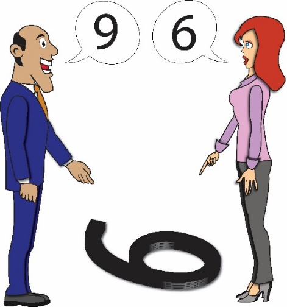
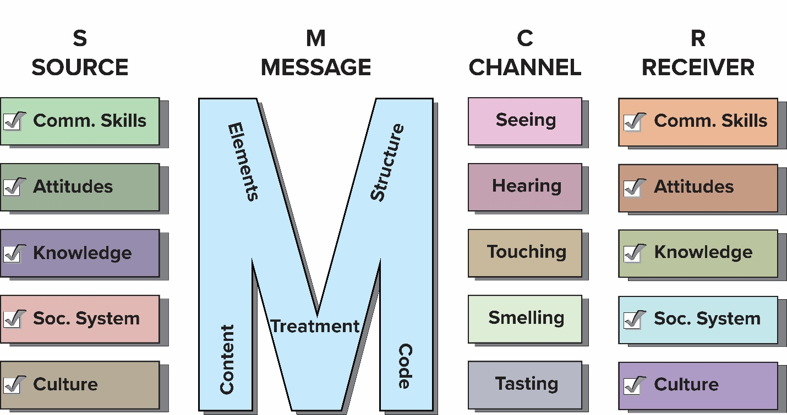
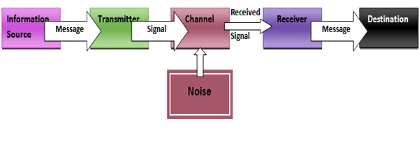
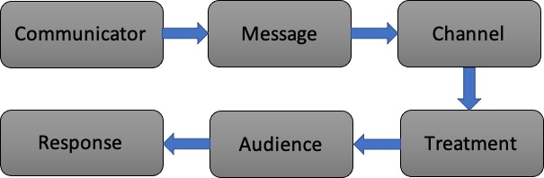
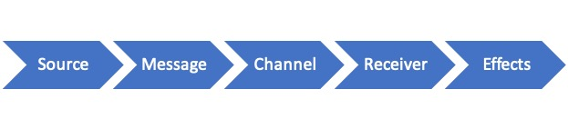
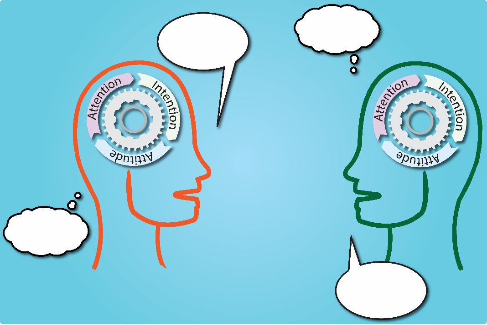
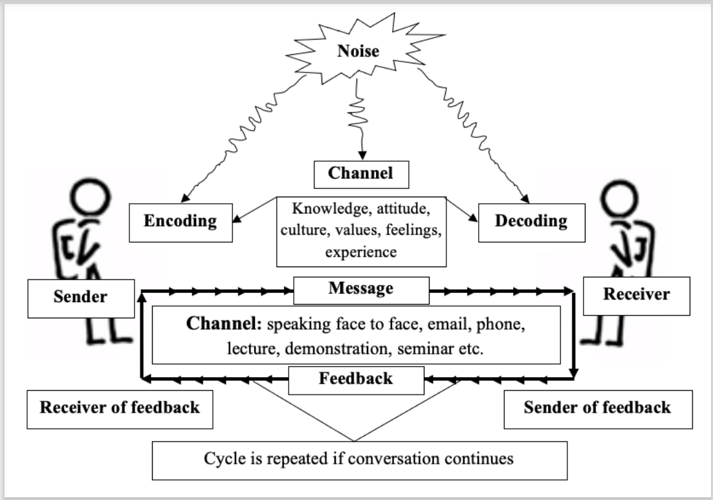

ARD 5112: Communication and Information Technology
2025-08-17
Introduction to communication
Communication brings common understanding
Source: ecampusontario.pressbooks.pub 
Introduction to communication
- Information is asset, and communication skill is wealth.
- Communication and human relations skills are currencies in professional and personal life.
- Human is a social being because they communicate with each other not because only they live in a society.
- Communication controls human’s existence and development.
- By communication one mind affects another.
- Communication is imperative (it controls action).
- Your communication abilities shape your personality.
Concept of Communication
- Communication = transfer of meassage from source to receiver
- Communication is a process by which message is transferred from source to receiver for common understanding.
- It is not linear — it’s reciprocal and iterative.
- It involves feed-forward (message sent) and feed-backward (message received).
Concept of Communication
- Leagans (1961): Communication is a process by which two or more people exchange ideas, facts, feelings or impressions in ways that each gains a common understanding of the meaning, intent and use of message.
- Communication is a process of sending and receiving messages through channels, which establishes common meanings between a source and a receiver.
Flow of Communication
- Sender initiates a message.
- Receiver responds with a feedback.
- Shared understanding is the goal.
Communication is completed only when mutual understanding is achieved.
Communication Cycle Example
- Feedback makes the process interactive and meaningful.
- If someone slaps a boy (Feed-forward), and the boy cries (Feedback), is it communication?
Yes, this is non-verbal communication. Even in negative or chaotic situations, messages are exchanged and feedback occurs.
Chaotic or Silent Communication
- Conflict, violence, or silence can also be forms of communication.
Even no feedback is a form of feedback.
Example: A phone rings but no one answers — we assume they are unavailable.
Calling someone who doesn’t respond — we interpret that as absence or disinterest.
A dead person cannot provide feedback — this ends the communication loop.
Types of Communication
- Verbal (~30% by seeing and hearing)
- Written
- Spoken
- Interactive (e.g. using device)
- Non-verbal (~70% by touching, tasting, seeing, smelling)
- Posture and gesture
- Proximity, closeness
- Eye contact and facial expressions
- Voice tone (alas! hurrah! yeaaaa!)
Importance of Communication
- About 70% of our time is spent for communication.
- Present age is called information age.
- Adoption of innovation by farmers
- Identification and solution of problems of farmers
- Create conducive situation for professional development
- Bring desired behavioural changes among farmers
- Social development (relations, values, norms, culture)
- Effective communication improves trust, cooperation, conflict resolution, teamwork and collaboration
Communication and human behavior
Functions of communication:
Communication builds human relationships through:
- Persuasion
- Negotiation
- Diplomacy
- Dispute resolution
Elements of Communication
Five elements of communication:
- Source/communicator/sender
- Message
- Channel
- Receiver/audience/respondent
- Feedback
Elements - Source
Communicator/source/sender
- Communicator acts as an originator of the message
- They start the communication process
- Task of a communicator ⇒ message selection and treatment
- Homophilous source and receiver enjoy comfort in communication
- Homophilous means similar in beliefs, values, education, social status, etc.
Qualities of a Good Communicator
- Knowledge level: Must know the message, objectives, needs, audience aspiration
- Faith of the receiver: More credible source leads to greater acceptance
- Interest: Adequate efforts and devotion to communicate the message
- Communication skill: Efficient message selection and treatment
- Language and culture: Compatible language helps proper treatment and interpretation
Qualities (Continued)
Attitude and presentation:
- Positive attitude towards message and receiver. Inattention, vocabulary differences, poor pronunciation, poor articulation, plural meanings, improper association should be avoided.
Message treatment:
- Handle message to make it clear, understandable and realistic
- logically arranged message gets better reception
- Understand the audience for proper treatment
- Message treated for the audience, not for the communicator
- Rational/reward appeals for literate farmers; fear appeal for illiterate farmers
Elements - Message
- Important information communicated by the source
- Good message makes individual feel a need that can be satisfied by action
- Should be valid, unambiguous, comprehensive and of utility
- Valid message comes from credible source and conforms with intentions
Criteria of a Good Message
- Communicableness - easy to communicate
- Less social and economic risk
- Aligned with beliefs, values and economic capabilities
- Simple - easy to understand and practice
- Divisibility - permits small scale trial before full adoption
- Relative advantage - higher benefits than existing
- Accuracy - relevancy and suitability well-tested under local conditions
Elements - Channel
- Medium or vehicle which carries the message
- Physical bridge between source and receiver
- Extension teaching methods are communication channels
- Person, mobile phone, newspaper, radio are examples
- Must be used in right way, right time, for right actions with right audience
- Can be local or cosmopolitan, and interpersonal, group or mass
- Early adopters use mass communication; late majority uses interpersonal channels
Criteria for Selecting Channel
- Availability - Locally available, common and familiar
- Cost - Simple, cheap and easy to obtain and handle
- Preference of communicator - Must be skilled in using selected channels
- Suitable content and receiver - Receiver should understand message and use channels
- Frequency of use - Repetition enhances acceptability; multiple channels in parallel works better
- Effectiveness - Should effectively bring together sender and receiver
Nearly extinct local media - e.g. folk music, theatres can be used
Elements - Audience
Receiver of the message (men, women, village leaders, farmers, etc.)
Factors affecting desirable response:
- Needs - Should be studied before initiating communication
- Knowledge level - Deliver message considering receiver’s knowledge
- Attitude - Form favorable attitude; message decoding depends on attitude
Audience (Continued)
- Available resources - Message actions need resources; align with available resources
- Socio-cultural systems - Message should be compatible with social systems
- Experience - New learning built upon previous experience; satisfactory experience leads to fast learning
Elements - Feedback
- Reaction given by receivers in response to message
- Return process where receiver acts as source
- Communication process ⇒ feed forward and feedback backward
- Self-communication: message encoded is fed back into system by decoding
- Action - Reaction interdependence is feedback
- Both sender and receiver can encode and decode simultaneously
Elements - Feedback (cont’d)
- Provides source information about success in accomplishing objectives
- Controls encoding of next messages
- Feedback can be:
- Intentional (e.g., nodding to show understanding)
- Unintentional (e.g., yawning from boredom)
- A student raising hand = intentional
- Looking distracted = unintentional
Importance of Feedback
- Clarify message - Feedback helps adjust or clarify the message
- Removes barriers - source can learn adoption barriers
- Facilitates proper action - to make message understandable
- Rectifies transmission errors - identifies channel noise to minimize
- Increases accuracy - reduces message distortion, improves adoption
Importance of Feedback (cont’d)
- Enhances confidence - improves rapport between source and receiver
- Improves learning - both active and passive feedback enhances knowledge
- Improves communication - rewarding feedback results in continued adoption
Problems in Getting Feedback
- Limitation of the channel
- Shyness of the receiver
- Discouraging by the communicator
- Socio-economic barriers
- Untimely message
- Language and cultural barriers
Analysis of communication models
Definition of Communication Model
- Model: Miniature (drawings, charts, diagrams) of complex process to show relationships, flows, structures
- Help simplify complex ideas for teaching and evaluation
- Offer organised way of looking at complex process
- Should show all important elements with minimal text
- Models: Berlo (1960), Shannon-Weaver (1949), Leagans (1963), Rogers and Shoemaker (1971)
Types of Communication Models
Action/linear/one-way Model – One-way transmission (e.g., TV broadcast, Shannon-Weaver’s model, Berlo’s model)
Interactive/two-way Model – Sender ↔︎ Receiver with feedback (e.g. News blog, Rogers and Shoemaker’s model, Leagan’s model)
Transactional or interpersonal Model – Both parties simultaneously sender and receiver (e.g. Interview, Barlund’s Model, mindful model)
Modern communication favors transactional, real-time exchange — especially in interpersonal and professional settings.
Berlo’s Model of Communication
Source: ecampusontario.pressbooks.pub
Shannon-Weaver’s Model of Communication
Leagan’s Model of Communication
Rogers and Shoemaker’s Model
Mindful (transactional) communication model
Source: ecampusontario.pressbooks.pub
Mindless communication: distraction, e.g. scrolling smartphone while listening.
Typical Communication Model (M. K. Hasan)
Noise/Disruption in Communication
Communication cycle disrupted by noise due to:
Internal causes
- Physiological: Hunger, fatigue, discomfort
- Psychological: Good or bad emotion or feelings
- Semantic: Meanings of words or symbols not matching
External causes: Noisy room, temperature extremes, broken devices, distractions
Notes:
- Encode ⇒ organization of information as message
- Message ⇒ encoded information
- Decode ⇒ interpretation of message
Causes of Noise in Communication
- Failure of channel to reach intended audience - not all attend meetings or access mass media
- Failure to handle channels skillfully - not everyone may hear message in meeting
- Failure to select appropriate channels - wrong method for objectives
- Failure to use channels according to audience abilities - written materials for illiterate
- Failure to avoid physical distraction - moving people, noise, heat, lighting, crowdedness
Causes of Noise (Continued)
- Failure of audience to listen/look carefully - undivided attention needed
- Failure to use enough channels in parallel - 5-6 channels may be needed for impact
- Use of too many channels in series - More channels in series increases distortion risk
Good communicator should identify and eliminate sources of communication noise
How to Minimize Channel Noise
Use channels based on:
- Specific objectives of message
- Nature of message - direct vs abstract, difficulty, scope, timing
- Audience - size, need, interest, knowledge
- Availability of channels and logistic support
- Combination of channels - parallel vs series
- Relative cost of channels
- Time available of audience and communicator
- Nature of channels - seeing, hearing, or doing
- Extent of cumulative effects of message
- Skills of communicator
Source Credibility
Concepts of source credibility
- Acceptance depends partly on “who said it”
- Set of perceptions about sources held by receivers
- Includes competence and trustworthiness
- May include: age, education, sex, language, ideology, socioeconomic status, etc.
Dimensions of source credibility
- Safety: Trustworthiness, kind, friendly, honest, just, dependable
- Qualifications: Expertness, experience, knowledge, skilled, communicability
- Dynamisms: Active, energetic, emphatic, fast, frank, bold
- Sociability: Gentle, accommodative, approachable, hospitable, attractive, pleasant
Importance of Source Credibility
In persuasive communication, vital role in message acceptance
Impacts:
- Participation in meeting - better/poor
- Attention of audience - sufficient/inadequate
- Message acceptance - low/high
- Implementation of message - desired/undesired
- Feedback of audience - affects understanding
Personal cosmopolite sources perceived as more credible than mass media
Message Management
Characteristics of a Message
- Technology orderly organized and encoded for information, instruction or persuasion
- Recommendations/contents affecting socioeconomic life
Characteristics:
- Relevant to objective
- Clearly understandable
- Aligned with mental, social, economic, physical capabilities
- Socially and economically significant
- Specific - no irrelevant material
Characteristics (Continued)
- Simply stated
- Accurate and scientifically valid
- Timely in relation to practice
- Appropriate to channel used
- Appealing and attractive
- Applicable to user system
- Adequate and complete
- Manageable by source and receiver
- Persuasive - affects affective domain for changes
Treatment of a Message
- Encoding message to make it understandable for desired feedback
- Necessary to carry intended meaning
- Organized message produces more comprehension and retention
- Disorganized message may foil communication functions
For effective persuasion:
- Pattern of organization
- Ordering of arguments
- Ordering of arguments
- Nature of arguments
- Message style
A. Pattern of Organization
- Space Pattern - geographical order (e.g. AEZ, soil tracts)
- Time order - historical perspective (e.g. Agricultural development)
- Deductive order - general to specific (e.g. role of communication)
- Inductive order - specific to general (e.g. impact of compost use)
- Psychological order - based on attitude, need, satisfaction, visualization, action
- Problem-solving order - cultivation process
- Climax order - key points at end
- Anticlimax order - key points at beginning
- Pyramidical order - key points at middle
B. Ordering of Arguments
Agreeable vs disagreeable parts
- Agreeable parts at beginning draw attention (pleasant materials help persuasion)
- Disagreeable parts at beginning can deter audience, causing avoidance
C. Nature of Arguments
One-sided vs two-sided message
- Limiting disfavourable parts suitable for illiterate audience
- Example: Family planning helps welfare (favourable) but may contradict religion (disfavourable)
- Two-sided message more effective with higher education receivers
D. Message Style
- Message repetition - Increases awareness but continued repetition may cause boredom
- Message comprehension - Receivers must understand to accept; correlated with agreement/retention
- Source evaluation - Communicator evaluated based on message contents affecting credibility
Message Appeals
Psychological features that invoke feelings
1. Fear appeal
- Creates threats affecting affective/cognitive domains to motivate behavior change
- Example: Get vaccinated because cholera epidemic causing 90% death
- Principle: Uncomfortable drive state motivates action to minimize/remove it
- Moderate fear effective; higher level causes anxiety and confusion
Message Appeals (Continued)
2. Reward appeal
- Message organized with possible benefits from innovation
- Blended with relative merits/advantages
- Example: Binashail vs Nazirshail - taller plants, 20% higher yield, earlier maturity, better recovery, rainfed cultivation, high demand
- Conclusion drawing: Explicit conclusions by source more effective than implicit by receivers
Message Appeals (Continued)
3. Emotional appeal
- ‘Pathos’ appeals creating appropriate feeling using values/emotions
- Argue for belief by pointing out rewards from holding belief
- Example: Clean homestead for safe environment for kids/parents
- Example: Bangabandhu’s speech on 7 March 1971
Message Appeals (Continued)
4. Rational appeal
- ‘Logos’ appeals presenting empirical/logical evidence
- Result demonstration is rational appeal
- Emotional and rational appeals often complementary
- Emotional for politicians; rational for elite/educated voters
- Association with known facts, visual elements, non-verbal cues works well
Message Reception - ‘Selective’/‘Partial’
- Process of exposure/attention, perception and retention
- Effects depend on attention, learning, and perception as intended
- Audience reaction explained by selective exposure, perception, retention
- People attend to (selective exposure), understand (selective perception), remember (selective retention) parts supportive of existing knowledge/attitude/beliefs
- Knowledge-gap hypothesis: Farmers with better knowledge have better attention/perception/retention
Source Evaluating Variables of Message
- Listenibility/readability - Economy of words; short active sentences (8-10 words); short words
- Human interest - Related to receivers
- Vocabulary diversity - Avoid repetition in formal/informal communication
- Realism - Empirical message more accepted than abstract
- Verifiability - Property of being scientifically tested
Level and Pattern of Communication
Three Types of Communication
- Interpersonal: Communicator meets individual audience (face-to-face, meeting, visit, letter, phone, video call)
- Group: Communicator reaches group with known identities (group discussion, method demonstration)
- Mass: Communicator reaches large number with unknown identities (mass gathering, radio, TV, newspaper)
Intrapersonal communication: Communicating with onself
Persuasive communication: Art to convince using skills, credible source, convincing arguments, relevance
Inerpersonal Communication
- Non-verbal cues vital in interpersonal, classroom, group, mass communication
- Non-verbal can be stronger than verbal
- Strong skills needed in personal/professional life
- In business: speak clearly/confidently to build rapport/convince
- Conflicts are common in interpersonal communication
Guidelines for Interpersonal Communication
- Professionals should follow guidelines in all audience settings
- Some inherently expert; others need to learn guidelines
- Strong skills needed in personal/professional life
- In business: speak clearly/confidently to build rapport/convince
Skills needed for Interpersonal Communication
Source: ecampusontario.pressbooks.pub
- Listening skill: mindful listening, careful and thoughtful attention
- People skill: sympathy and empathy, see the context from others’ perspectives
- Emotional intelligence: knowing own emotion, showing careful emotions and reactions
Stick to the ethical values while communicating.
Guidelines for Verbal Communication
- Think before speaking
- Be clear and concise; make simple considering audience
- Speak with confidence using proper voice, body language, eye contact
- Vary vocal tone; use inflection for emphasis, pitch for emotion
- Be active listener (receiving, understanding, remembering, evaluating, responding)
- Be aware of non-verbal cues; read audience body language
Guidelines for Non-verbal Communication
- Facial expression - Relax muscles, smile, avoid frown, conform with emotion
- Eye contact - Binds speaker/audience, conveys honesty/respect; roam gaze, don’t stare
- Tone, pitch, speed - Speak slowly/clearly with modulation
- Appearance - Proper dress/make-up/hairstyle for context; formal outlook for seriousness
- Gesture - Using body parts (head, hands, thumbs, legs, whole body)
Non-verbal Guidelines (Continued)
Body postures - Appropriate sitting/walking/standing
- Introvert: Folded hands, crossed legs
- Tired/lack confidence: Dropping shoulder
- Hiding mentality: Hands behind
- Standing on one foot: Personality issues
Touch - Hug, handshake, light tap
Space - Distance shows affection/domination
Getting rid of distracting mannerism - Vocal impediments, finger tapping, lip biting/licking, toying with objects, frowning, throwing hands, shaking legs, adjusting dress/hair, head wagging
Non-verbal Guidelines (Continued)
- Difficult to improve because faults arise unconsciously
- Video record self-presentation and review with colleague/friend
- If audience notice mannerism, they focus on it rather than message
- Gestures should be graceful and unobtrusive
Conflicts in interpersonal communication
- Conflicts are common and normal
- Conflicts can be both constructive and destructive
- Difference in attitude, values, expectations, power and status cause conflicts
- Well resolved conflict brings stronger relationship and better problem solving
- Poorly managed conflict brings stress and damages relationships
Conflict resolution
- Improve communication skill
- Solve conflict mindfully and thoughtfully
- Find points of both the parties’ actions
- Identify common parts of the both parties
- Use empathy: see from others’ perspective
- Understand your own perspective
- Point towards to area of common agreement
- Recommend mutually beneficial ways by compromise and collaboration
Functions of group communication
- Problem indenfication
- Problem solving
- Information sharing
- Decision making
- Collaboration and cooperation
- Motivation
- Conflict management
Communication strategy
Effective communication is a function of:
- Source credibility – Trustworthiness, expertise
- Audience characteristics – Age, education, values, needs
- Channel availability – Face-to-face, phone, email
- Feedback mechanism – Immediate or delayed, verbal or non-verbal
- Message treatment – Tailoring the message improves effectiveness.
Persuasive Communication
- Empathy: Put yourself in others’ shoes
- Clarity: Use clear, precise language
- Relevance: Match audience interest
- Respect: Be polite and culturally sensitive
Objectivity & Subjectivity
- Objective: Facts, data, neutrality
- Subjective: Emotions, experience, opinion
- Important vs Urgent: Don’t miss the important ones becuase of many other urgent issues.
Good communication blends all thoughtfully.
Usual things don’t make headlines — unusual does!

Avoid Biases in Communication
- Avoid prejudices and bias
- Don’t rely only on past experience
- Incorporate latest and accurate information